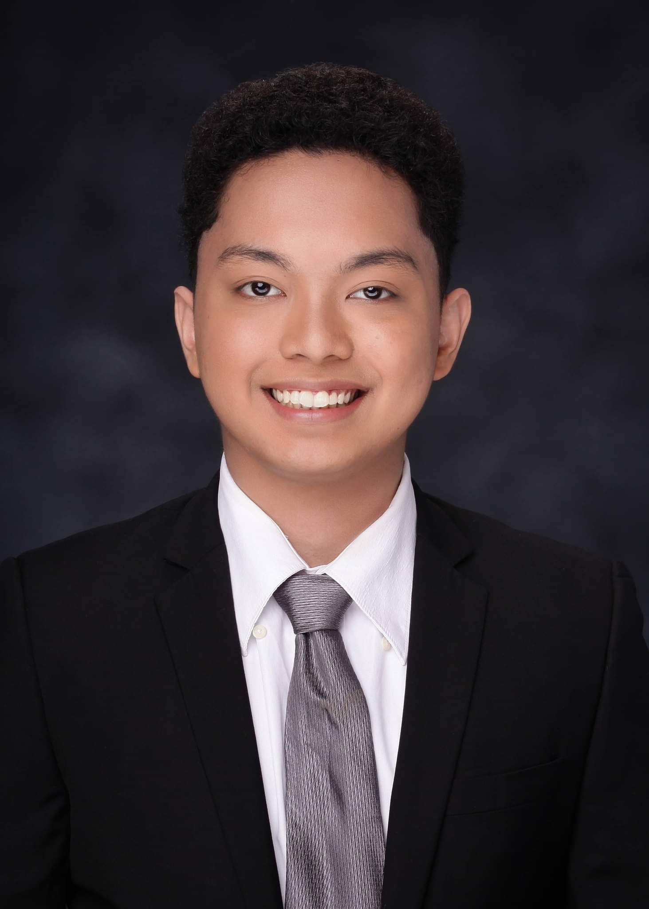

My Resume

Joshua Cezar S. Elloso
Licensed Electronics Technician
Technological Institute of the Philippines - Quezon City
Bachelor of Science in Electronics Engineering
Career Objective
A licensed Electronics Technician and Electronics Engineering graduate looking for opportunities in
Electronics Engineering where I can demonstrate the learning outcomes of the Electronics Engineering program of
the Technological Institute of the Philippines (TIP), a program accredited by the US-based outcomes-oriented ABET
(Accreditation Board for Engineering and Technology).
Work History
Intern at Ultrasonic Broadcasting System Inc - Ortigas Pasig City (April 2019 - May 2019)
As an Intern, I was tasked to do the following:
- Transmitter Equipment Maintenance.
This is about performing routine maintenance on equipment in the transmitter site, determining when and what
kind of maintenance is needed.
- Broadcast Operations Monitoring and Troubleshooting.
This pertains to the broadcast operations in the studio and the transmitter site where duties include the
monitoring and recording daily operations log, and troubleshooting in order to identify and fix problems during
broadcast.
Technical Skills
- Programming Languages : C, C++, Python, Html, Css, Javascript
- Computer Literate : Microsoft Office : Word,Excel,Powerpoint
- Matlab, LabView, AutoCad, NI Multism, Proteus Software
- Adobe Photoshop, Canva
- GitHub
Soft Skills
- Leadership
- Verbal and Written Communication
- Teamwork
- Time Management
- Problem Solving
- Adaptability
- Attention to details
Leadership Activities
Department Student Council of Electronics Engineering
- Secretary 2017-2018
- President 2018-2019
College of Engineering and Architecture
OTHERS